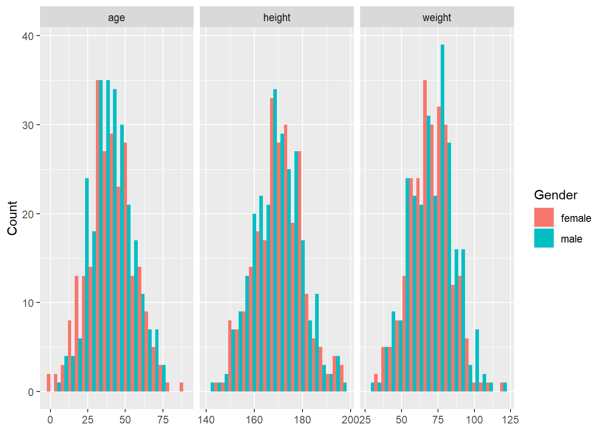
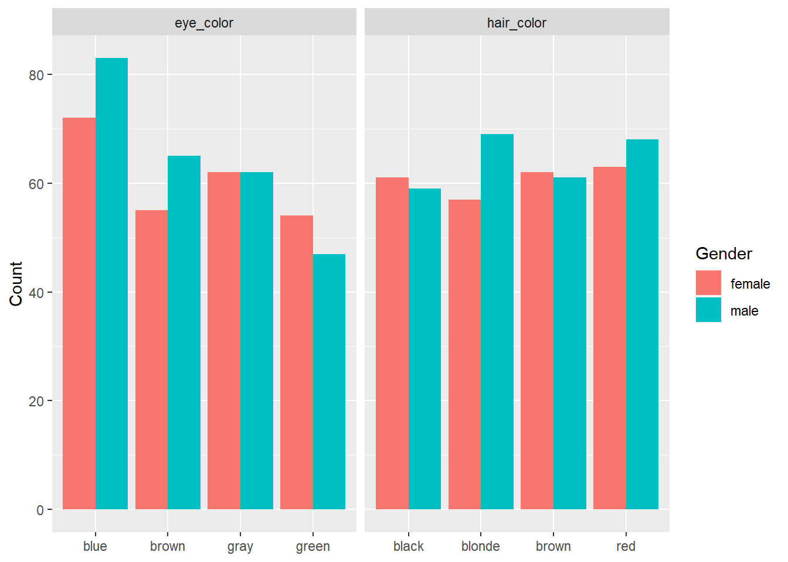
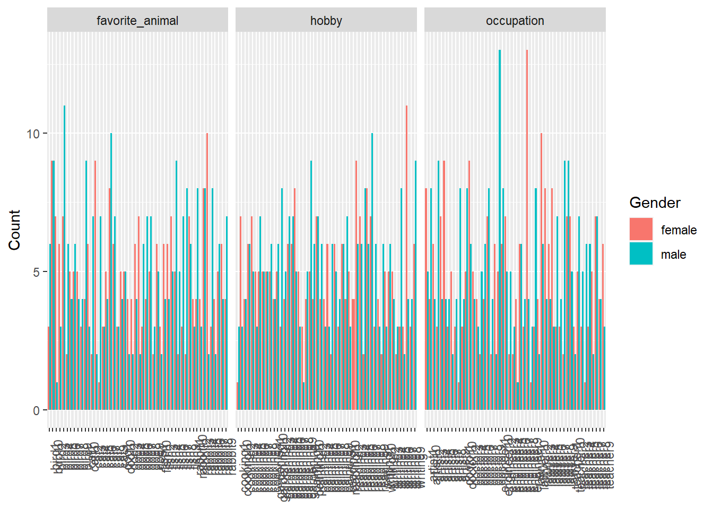

library(data.table)
set.seed(123)Simulated Data
Overview
Simulated data is a useful tool for testing a data analysis pipeline, because it allows you to create data that meets certain specifications and assumptions, and to evaluate how well your pipeline performs under different scenarios. For example, you can use simulated data to check the validity, accuracy, and robustness of your statistical methods, or to compare different approaches and algorithms.
In this tutorial, I will show you how to use R to generate simulated data for 500 individuals, with 10 variables: age, height, weight, gender, blood type, eye color, hair color, occupation, hobby, and favorite animal. Some of these variables are continuous (age, height, weight), some are categorical (gender, blood type, eye color, hair color), and some are text (occupation, hobby, favorite animal). I will also show you how to load the data and perform some exploratory data analysis using R.
To generate the simulated data, we will use the data.table package, which provides fast and convenient operations on tabular data. We will also use the rnorm function to generate random numbers from a normal distribution, the sample function to draw random samples from a vector of values, and the paste0 function to concatenate strings.
First, we need to load the data.table package and set the seed for reproducibility:
Next, we create an empty data table with 500 rows:
dt <- data.table(matrix(NA,nrow=500))Then, we add the variables one by one. For each variable, we need to specify the name, the type, and the distribution or values to draw from. For example, to add the age variable, we use the following code:
dt[, age := rnorm(500, mean = 40, sd = 15)] # age is normally distributed with mean 40 and standard deviation 15To add the height variable, we use the following code:
dt[, height := rnorm(500, mean = 170, sd = 10)] # height is normally distributed with mean 170 and standard deviation 10To add the weight variable, we use the following code:
dt[, weight := rnorm(500, mean = 70, sd = 15)] # weight is normally distributed with mean 70 and standard deviation 15To add the gender variable, we use the following code:
dt[, gender := sample(c("male", "female"), size = 500, replace = TRUE)] # gender is randomly sampled from male or femaleTo add the blood type variable, we use the following code:
dt[, blood_type := sample(c("A", "B", "AB", "O"), size = 500, replace = TRUE)] # blood type is randomly sampled from A,B,AB,OTo add the eye color variable, we use the following code:
dt[, eye_color := sample(c("brown", "blue", "green", "gray"), size = 500,
replace = TRUE)] To add the hair color variable, we use the following code:
dt[, hair_color := sample(c("black", "brown", "blonde", "red"), size = 500,
replace = TRUE)] To add the occupation variable, we use the following code:
dt[, occupation := paste0(sample(c("doctor", "lawyer", "teacher", "engineer",
"artist"), size = 500,
replace = TRUE), sample(1:10,size=500,
replace=TRUE))] To add the hobby variable, we use the following code:
dt[, hobby := paste0(sample(c("reading", "writing", "painting", "cooking",
"gardening"), size = 500,
replace = TRUE), sample(1:10,size=500,
replace=TRUE))] To add the favorite animal variable, we use the following code:
dt[, favorite_animal := paste0(sample(c("cat", "dog", "bird", "fish",
"rabbit"), size = 500,
replace = TRUE), sample(1:10,size=500,
replace=TRUE))] Now, we have a data table with 10 variables and 500 rows. We can save it as a CSV file using the fwrite function:
fwrite(dt, file = "simulated_data.csv")To load the data and perform some exploratory data analysis, we can use the readr package to read the CSV file, and the dplyr package and the ggplot2 package to manipulate and visualize the data. For example, we can use the following code to load the data and calculate some summary statistics:
library(readr)
library(dplyr)
Attaching package: 'dplyr'The following objects are masked from 'package:data.table':
between, first, lastThe following objects are masked from 'package:stats':
filter, lagThe following objects are masked from 'package:base':
intersect, setdiff, setequal, unionlibrary(tidyr)
library(ggplot2)
dt <- read_csv("simulated_data.csv")Rows: 500 Columns: 11── Column specification ────────────────────────────────────────────────────────
Delimiter: ","
chr (7): gender, blood_type, eye_color, hair_color, occupation, hobby, favor...
dbl (3): age, height, weight
lgl (1): V1
ℹ Use `spec()` to retrieve the full column specification for this data.
ℹ Specify the column types or set `show_col_types = FALSE` to quiet this message.dt %>%
summarise(
mean_age = mean(age),
mean_height = mean(height),
mean_weight = mean(weight),
prop_male = mean(gender == "male"),
prop_female = mean(gender == "female"),
prop_A = mean(blood_type == "A"),
prop_B = mean(blood_type == "B"),
prop_AB = mean(blood_type == "AB"),
prop_O = mean(blood_type == "O")
)# A tibble: 1 × 9
mean_age mean_height mean_weight prop_male prop_female prop_A prop_B prop_AB
<dbl> <dbl> <dbl> <dbl> <dbl> <dbl> <dbl> <dbl>
1 40.5 170. 70.4 0.514 0.486 0.212 0.27 0.264
# ℹ 1 more variable: prop_O <dbl>We can also use the following code to plot the distributions of age, height, and weight by gender:
dt %>%
gather(key = variable, value = value, age, height, weight) %>%
ggplot(aes(x = value, fill = gender)) +
geom_histogram(position = "dodge", bins = 20) +
facet_wrap(~variable, scales = "free_x") +
labs(x = NULL, y = "Count", fill = "Gender")
The output is:
We can also use the following code to plot the counts of eye color and hair color by gender:
dt %>%
gather(key = variable, value = value, eye_color, hair_color) %>%
ggplot(aes(x = value, fill = gender)) +
geom_bar(position = "dodge") +
facet_wrap(~variable, scales = "free_x") +
labs(x = NULL, y = "Count", fill = "Gender")
We can also use the following code to plot the counts of occupation, hobby, and favorite animal by gender:
dt %>%
gather(key = variable, value = value, occupation, hobby, favorite_animal) %>%
ggplot(aes(x = value, fill = gender)) +
geom_bar(position = "dodge") +
facet_wrap(~variable, scales = "free_x") +
labs(x = NULL, y = "Count", fill = "Gender") +
theme(axis.text.x = element_text(angle = 90))
This concludes the tutorial on how to use simulated data to test a data analysis pipeline. I hope you found it useful and informative. Thank you for reading! 😊
Further reading
The whole Wrangle section of R4DS shows a lot of the topics discussed here in action. For a more interactive (but less comprehensive) source of information, check out the Work with Data and Tidy your Data sections of the R Studio Primers.
This paper provides a nice further discussion regarding outliers. It’s very non-technical (no equations) and easy to read.